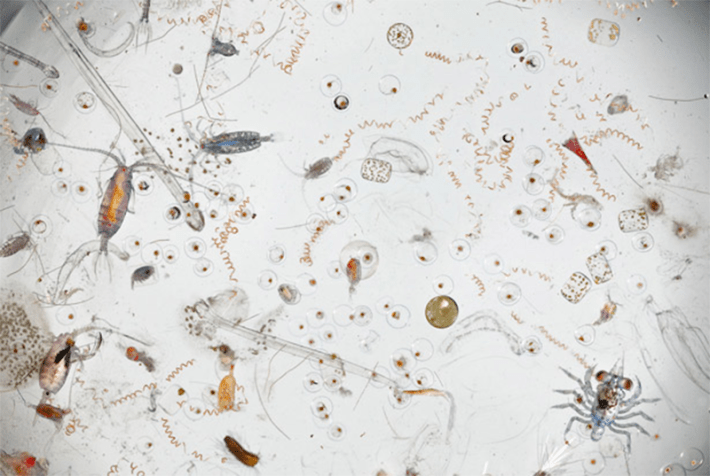

It is a remarkable trait of ours that we are drawn toward what is distant and luminous yet avert our gaze from what is near and dark. Our eyes lift to the heavens, tracing the arc of satellites and the shimmer of distant galaxies. But beneath our feet—beneath the mirror of the sea—lies a realm no less vast, no less mysterious, and perhaps far more intimately tied to our survival. The deep ocean is Earth’s largest biome. It is older than the forests, colder than the poles, more pressurized than the depths of any mine. And yet we know less of it than we know of the far side of the moon.
It is not surprising that we have hesitated to go there. The ocean’s abyssal plains and hadal trenches exist at the intersection of the unknowable and the inaccessible. They are dark, crushingly silent, and seemingly lifeless. Yet the deep ocean is neither void nor desolation. It is, as the physicist might say, a boundary condition—a place where life has stretched its parameters to their furthest edges. In these twilight zones dwell bacteria that metabolize sulfur from volcanic vents, crabs that farm microbes in hydrothermal plumes, and corals that have stood for thousands of years as quiet witnesses to time itself.
If the stars beckon us with the drama of distance, the ocean should call us back with the drama of relevance. It is not just life that is found in the deep ocean—it is life’s machinery. These hidden ecosystems help regulate Earth’s climate, store immense quantities of carbon, cycle nutrients through the biosphere, and are responsible for 90 percent of heat absorption. To disturb them is to meddle with the levers of a planetary system we only partly understand. And yet we disturb them still.
The ocean is not a warehouse; it is a workshop. And we are its stewards.
The story of the deep ocean, as it stands today, is one of neglect wrapped in contradiction. We have trawled its plains for fish, punctured its crust for oil, and begun prospecting its minerals as if it were a vault without a lock.
There is a chilling irony in this. At the very moment when the world confronts a crisis of climate, biodiversity, and equity—at the moment when we most need to understand Earth as a unified system—we have left unexplored the part of the biosphere that may hold the keys to our long-term resilience.
We do not know, for instance, how changes in deep ocean currents may affect surface weather patterns, or how acidification at depth may cascade through food webs. We do not fully understand how much carbon the deep sea can store, or for how long. We have, in short, built models of the future that are blind to the half of the Earth that is most obscure.
And yet, as always, knowledge begins with attention. Over the last decade, a quiet but profound shift has begun to take place. Scientists, policymakers, and Indigenous communities have begun to call not only for the protection of the deep sea, but for its regeneration—a concept that moves beyond conservation into the realm of reciprocity. If conservation is the act of restraint, regeneration is the act of repair. It assumes that our relationship to the ocean is not one of dominion, but of dependence.

DEEP TREASURES: This drop of seawater teems with life: arrowworms, filaments of cyanobacteria, algae, and fish eggs. And yet there are millions of marine species yet undiscovered, a vast number of which are microbial, living in chemical symbiosis with their extreme environments. Credit: Maia Valenzuela / Wikimedia Commons.
This new narrative is not born of sentimentality. It is grounded in science and driven by the logic of systems. The ocean is not a warehouse; it is a workshop. And we, the inheritors of its legacy, are also its stewards. The recognition of the deep ocean as a “global public good”—a phrase now appearing in international treaties and funding frameworks—signals the beginning of a transformation in how we conceive of value. No longer must value be measured solely in commodities extracted, but in functions sustained and futures secured.
Such a transformation demands new structures. It demands governance systems that account for complexity, and financial instruments that reward long-term thinking. The Deep Blue Initiative, launched in 2024, is a collective effort to gather scientists, entrepreneurs, policymakers, and visionaries around the question of how to align exploration with responsibility. From these conversations emerged the proposal for a “Deep Ocean Fund”—a hybrid financial mechanism designed not only to unlock capital for research and technology, but to do so in a way that reflects the moral gravity of what is at stake.
Among the proliferating strands of the Deep Blue Initiative, three have begun to crystallize into a vision of regenerative industry: marine biotechnology; deep ocean energy, particularly offshore geothermal and geological hydrogen; and marine carbon dioxide removal.
Marine biotechnology—projected to generate hundreds of billions in market value over the coming decades—is a discipline born from the marriage of deep-sea biology and genomic science. Of the millions of marine species yet undiscovered, a vast number are microbial, living in chemical symbiosis with their extreme environments. These life forms carry enzymes that can withstand pressure, catalyze reactions at near-freezing temperatures, and disassemble pollutants at molecular scales.
Deep ocean energy is less advanced, but no less compelling. The deep sea holds immense thermal gradients and mineral formations rich in natural hydrogen. If harnessed, these forces could provide low-emission, stable energy to nations seeking to break dependence on fossil fuels.
As we grapple with the intractability of global emissions, the ocean offers a potential reprieve—not as a dumping ground, but as a partner in rebalancing the carbon cycle. Marine carbon dioxide removal works through methods such as alkalinity enhancement, deep-sea biomass burial, and artificial upwelling; and scientists are exploring how we might accelerate the ocean’s natural role in absorbing CO₂.
This new narrative is not born of sentimentality. It is grounded in science.
When viewed together, these three sectors—biotechnology, deep-sea energy, and marine carbon dioxide removal —represent a continuum. One is commercially mature, another technically promising, and the third scientifically emergent. What binds them is not their similarity, but their interdependence. Each requires robust science, fair governance, and sustained investment. And each reveals the contours of a new economic logic: one in which regeneration is not a cost, but a value proposition.
We like to imagine that innovation is born in a flash—an idea, a spark, a lone mind at the edge of what is known. But the truth is more prosaic, and more profound. Innovation does not spring fully formed; it is built plank by plank, scaffolded by systems, nurtured by institutions. And most of all, it must be financed.
Let's be clear: Finance does not invent the future. But it enables those who do. When we sent probes to the outer planets, we did so not because the market demanded it, but because a few bold institutions dared to look beyond the horizon. When we mapped the human genome, it was not for quarterly returns, but for the long arc of human understanding. In both cases, large-scale coordination—of funding, of governance, of vision—was essential. So too it must be now.
The Deep Blue Initiative has begun to lay a foundation. The first brick is the Nature Capital Fund—a financial vehicle designed to help nations treat marine biodiversity as an asset, not a liability. It begins with a simple but radical premise: that digital sequence information, derived from marine organisms, is not merely data but national wealth.Such a fund allows countries to monetize their biodiversity through licensing and benefit-sharing, while reinvesting revenues into science, conservation, and local infrastructure. It links the discovery of genetic resources to the stewardship of ecosystems—tying together what too often has been torn apart.
This is not a privatization of nature. It is a recognition that sovereignty includes science. That the nations most rich in biodiversity—often among the poorest economically—deserve not charity, but partnership. If done ethically, these funds can become engines of fairness, ensuring that the genomic gold rush does not bypass the communities who live nearest to the sea.
This is the new covenant. Between science and society. The present and the future.
The next brick is more industrial, more material: the Deep Ocean Deep Tech Cluster. This is an ecosystem in the literal sense—a co-location of labs, capital, testbeds, and entrepreneurs. Startups in ocean biotech, subsea robotics, MRV systems, and clean energy could share infrastructure, data, and talent. A cluster like this does more than reduce costs. It accelerates trust—among investors, among regulators, and among technologists themselves.
The third brick is the FOAK Project Finance Facility—a targeted loan structure that helps bridge the chasm between prototype and profitability. First-of-a-kind pilots—especially in ocean energy—are notoriously difficult to fund. They are too risky for conventional banks, too capital-intensive for VCs, and too advanced for most grants.
This facility proposes a pragmatic fix: milestone-based, concessional loans, tied not to profits but to validated progress. If a geothermal turbine is successfully deployed, if a deep-sea carbon dioxide removal pilot achieves its targets, funding is released. If it fails, risk is absorbed collectively.
Such mechanisms have already proven successful in adjacent sectors—cleantech, semiconductors, space launch platforms. Applied to the deep ocean, they could unlock billions in institutional capital simply by offering a clearer onramp.
These tools are not silver bullets. They are infrastructure—for capital, yes, but also for culture. They imply a different ethic: one that does not demand immediate monetization but accepts that regeneration takes time; that complexity requires patience; that the sea, like knowledge itself, does not yield to haste.
In the final reckoning, the deep ocean is not a wilderness to be tamed, nor a warehouse to be drained. It is the unfinished chapter of Earth’s biography. And we, who have read only the surface, now hold the pen.
Let us write not with conquest, but with curiosity. Let us fund not only what is profitable, but what is beautifully necessary. Let us govern not with greed, but with guardianship.
This is the new covenant. Between science and society. Between the present and the future. Between the surface of things and their deepest truths.
The ocean has always been, in the oldest myths and the latest models, a mirror. What we see in it now—plunder or partnership, neglect or regeneration—will reflect not its nature, but our own.
Read the full Deep Blue Initiative report here. 
Lead image: phmarcosborsatto / Shutterstock
For more information, visit https://oceanx.org or https://www.oqfoundation.org/en/.
Källförteckning
- Originalartikel: https://nautil.us/the-deep-ocean-is-a-global-public-good-1238459/